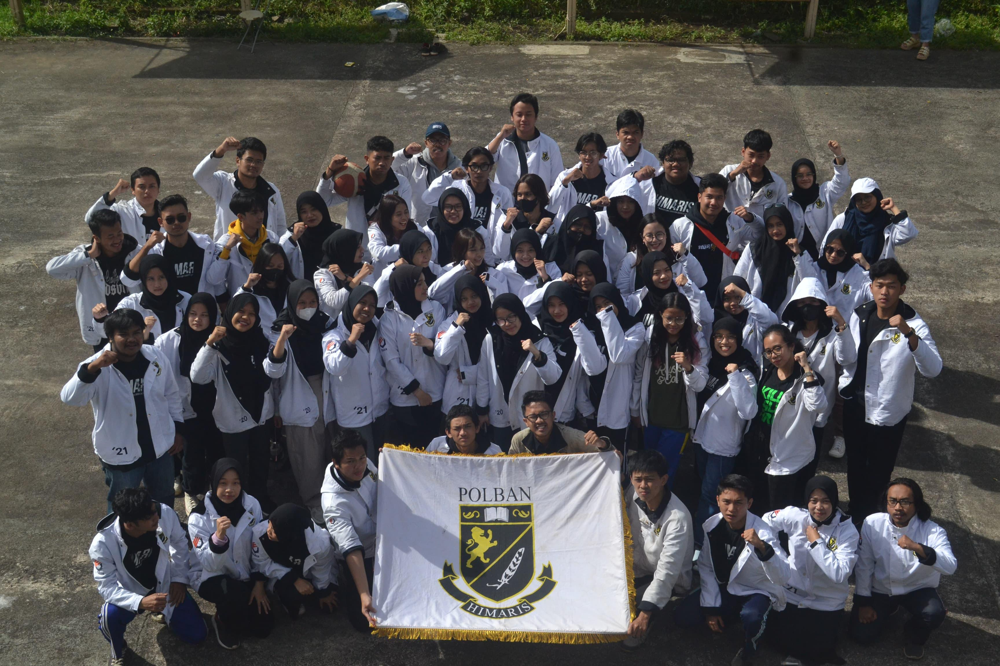
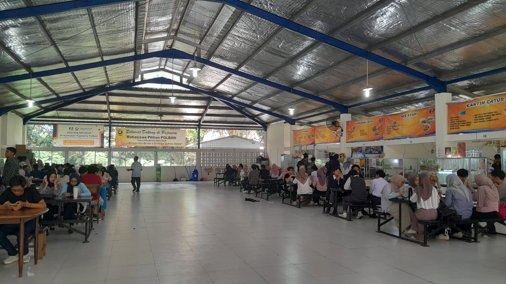
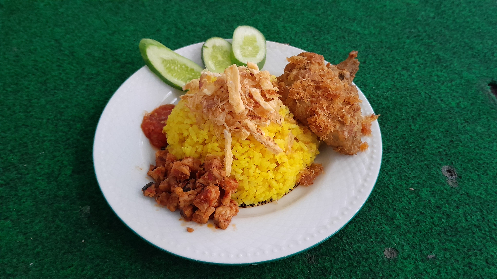

Himaris Newsletter
Come and take the experience with us
What's New?
Full of Joy! Hibernasi Event Conducted Successfully

On Friday, April 5 2024, HIMARIS held an event called Hibernasi or also known as Himaris Berdonasi. It is an annual sharing event aimed to provide something beneficial to the people in need, and it is run by the students of Himaris. This year, as Hibernasi appeared at the same time as the holy month of Ramadan, the event was presented as a joyous iftar gathering. The iftar gathering was successfully conducted in an orphanage called Panti Asuhan PYI which is located on Jalan Pesantren, Cimahi, West Java. Started at 4 PM to 7 PM, the iftar gathering was enthusiastically participated by eight elementary school students from the third grade to the sixth grade and was attended by 52 Himaris students consisting of the first, second, and third year students. This year, Himaris students shared clothes, various kinds of novels and comics, and a sum of money to the students.
Read More
A Farewell Party for Class of 2020 Who Will Embark a New Journey

The Himaris Event called “Farewell Feté; Bon Voyage” was held on May 12, 2024 at Villa Kayu Manis which is located in Ciumbuleuit, Bandung. This kind of event is usually conducted each year to celebrate the graduation of the students who have already graduated from Polban. This year the name of this event was “Farewell Feté; Bon Voyage.” The word Feté means party in Greek language and Bon Voyage expression in French which means good wishes for someone who will do the journey.
Read More
A Microsoft Office Course for the Final Year Students

From 3 to 5 June 2024, the English Department of Politeknik Negeri Bandung held the Microsoft Office certification program for the final year English students. The program was held in the P2T building specifically at the Laboratory 2 on the second floor. The purpose of this course was to provide the students with courses and certifications of Microsoft Office that can be beneficial for them to apply for work in the future as nowadays, most companies use Microsoft Word to support their work. Moreover, the students who get the certification can have a point plus when applying for a job.
Read More
Inspirational Alumni and Current Student
The Remarkable Life of Pravda Pasha Legawa

“No matter how tough the challenges in my life are, I will just do whatever the tasks I must do, as best as I can,” said Pravda, a student of the English Language of Politeknik Negeri Bandung. Pravda Pasha Legawa or also known as Pravda is an ambitious and well-experienced student who was born in Bandung, April 4th, 2003. Currently, he lives in Kopo, Bandung. As a hard-working student, he has an impressive GPA of 3.5. He was inspired by Maudy Ayunda–a multitalented Indonesian figure who has the spirit to study abroad and has the willingness to introduce Indonesian culture to other countries. Her spirit to study, somehow, gives Pravda motivation to study more and more.
Read More
Fadya Krishna Adinda: Be Brave to Pass All the Challenges in Front of You

Have you ever met someone who isn't afraid to learn new things in Himaris? If you haven't, then this article will introduce you to a student who is known for her positivity in Himaris. Fadya Krishna Adinda or usually called Aya by her friends is a student from 2A in the English Department Politeknik Negeri Bandung. This year is her second year studying at Polban. She was born on 26 April 2004 in Bandung. Fadya is known as a cheerful student who always supports her friends on campus. Last semester, her GPA was 3.35.
Read More
The Journey of Isfahany Sarah Syahida: A Little Step Can Bring You Closer to Your Dream

We will introduce you to an outstanding alumna of the English Department who can be a good example for all of us to trust every little step that we go through. Isfahany Sarah Syahida or also known as Sarah is a 26-year-old English Department alumna of Politeknik Negeri Bandung who graduated in 2021. A long time ago, when Sarah had just graduated from high school, she had no idea that studying in college could change her life.
Read More
Self-Improvement
Improve Your Speaking Skills with A Netflix Series: Emily in Paris
“You are keeping me out of the loop!” Have you ever heard this expression? It comes from a Netflix Series, Emily in Paris. Imagine. If you could say that kind of English expression in your daily communication fluently, would that be impressive and complimentary? By watching the Emily in Paris Netflix Series, it will be very helpful for you not only to improve your English speaking skills, but also to enrich your vocabulary! You will not get bored as the series is lightly enjoyable, cinematically beautiful, and suitable for us as English students. So, what should we do to improve our speaking skills by watching the Emily in Paris Series? Without any further ado, let's dive into it!
Read More
Entertaiment
5 Fun Facts About Himaris You Probably Don't Know
Have you ever thought about what is interesting about Himaris? What makes Himaris different from other student associations? In fact, Himaris has several interesting facts that you probably did not realize. Here are five fun facts about Himaris.
Read More
Reviews
Pujasera's Top 5 Foods Recommendations
After long-hours of classes, you must be hungry, and you want something very delicious to eat, don't you? If you feel so, come to the student food court Pujasera! This place serves a variety of delicious foods that are suitable an affordable for Polban's students. There are several foods that you should try. They are Nasi Bakar Cumi, Nasi Fuyunghai, Nasi Ayam Bakar Madu, Nasi Ayam Serundeng, and Spaghetti Katsu.
Read More
Miscellaneous
Tips to Make Nasi Kuning with Rice Cooker
Are you an anak kosan, which means a student who stays in a boarding house? Are you confused about making simple and cheap, but healthy dishes? Maybe this article will help you. Many anak kosans often buy ready-to-eat food rather than cooking it themselves, even on the weekends. You may spend a lot of money if you eat out all the time, and the food might be unhealthy. Actually, when you have time, especially at the weekend, you can make your own delicious food that does not cost a lot of money, but it's healthy and it's easy to make. One of the simple and cheap dishes is Nasi Kuning. This article is about how to make Nasi Kuning using a rice cooker. Check it out!
Read More
Upcoming Events
Are you interested in joining any events related to English? If you are interested, this section is for you. We will show you a variety of events that will be held very soon. Please make sure you read each of the requirements and guidelines very carefully in order to avoid misunderstandings and misinformation. Let's jump into the event information!
Annual English Competition of Politeknik Negeri Bandung (AECP) 6.0
As a student of the English Department, you must be very similar to hearing it, aren’t you? AECP is a competition run by the students of HIMARIS targeted for the high school participants. This year, AECP will be conducted around September to October. Check the further details through their Instagram account!
Click Here